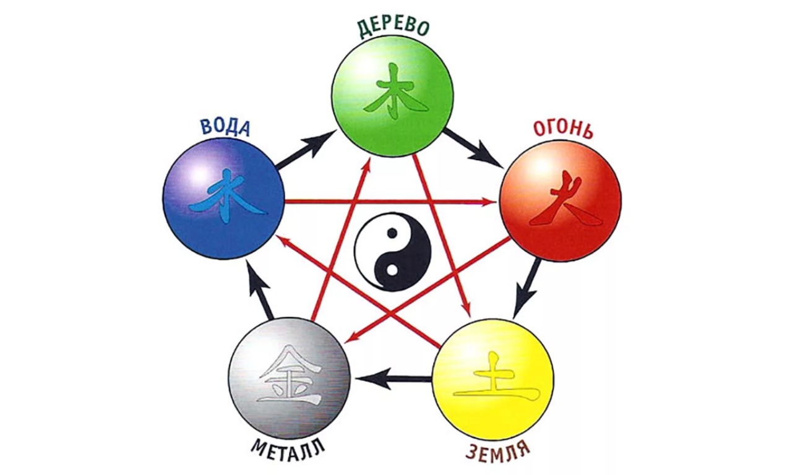
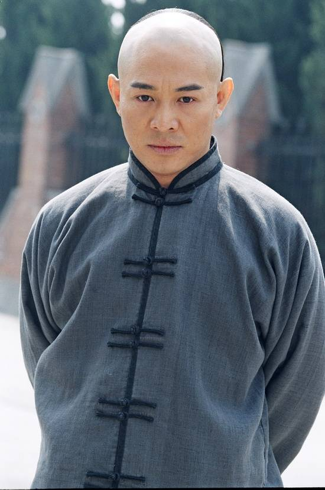
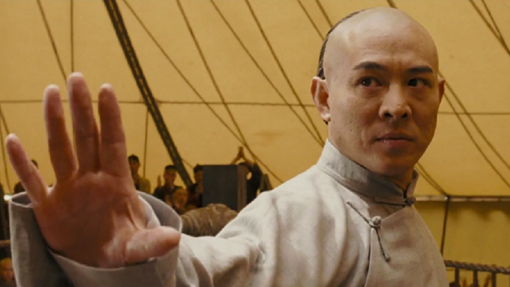

 Взаимодействие ИНЬ и ЯН рождает пять первоэлементов или стихий (движений энергии ЦИ), которые являются основой всех вещей и состояний природы: Воду, Дерево, Огонь, Землю и Металл. Пять элементов сменяют друг друга, а также порождают и уничтожают друг друга. У каждого элемента есть 2 элемента, близких ему. Один — который питает его и второй — которого питает он. Есть один враждебный — который его разрушает. И есть один зависимый, который разрушается им самим.

Приветствую тебя незнакомец.
Ты проделал долгий путь чтобы помыть подмышки в озере святых слёз.
Ты познал природу вещей и хочешь чтобы я назвал тебя мастером У-Син?
Кроме принебрежения правилами гигиены у тебя ещё есть аргументы?

Заставь меня трижды признать тебя победителем в поединке.
Только тогда я склоню перед тобой голову и назову тебя мастером У-Син. Сделай свой выбор